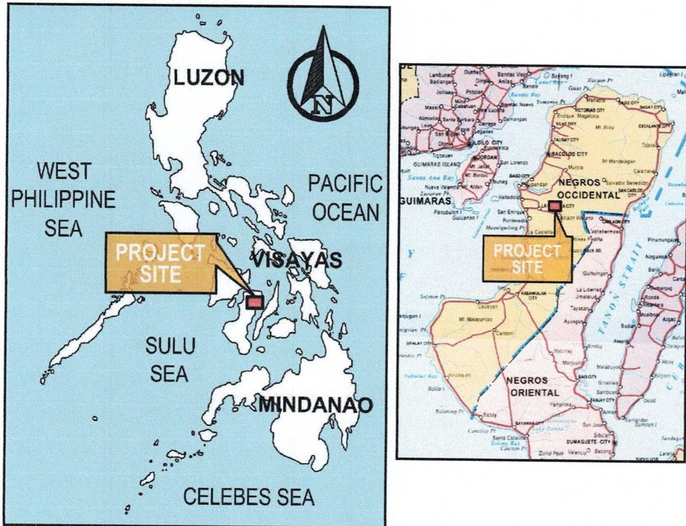
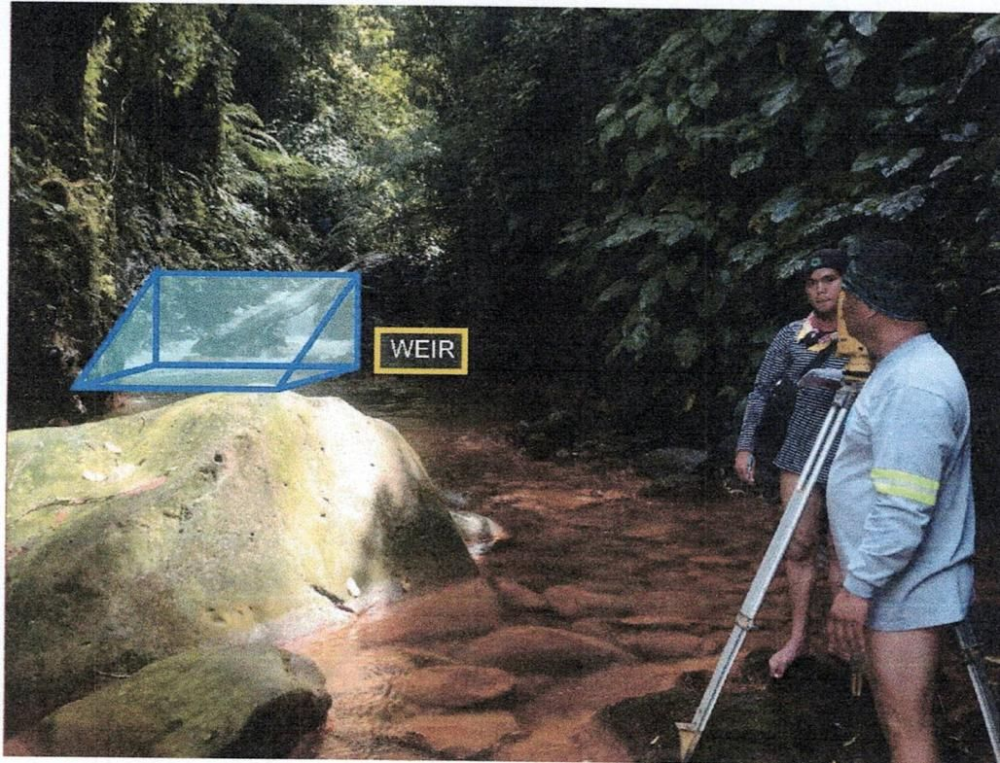
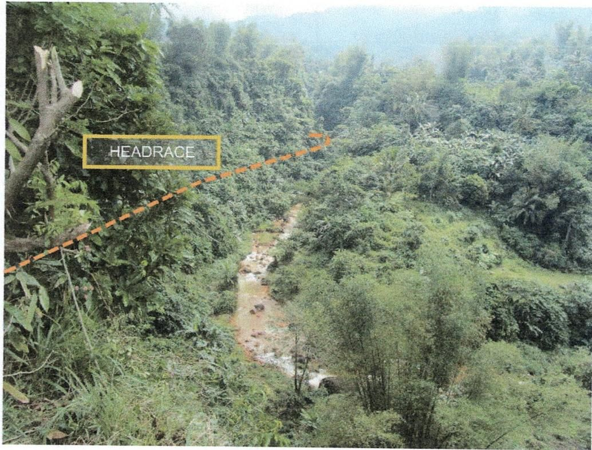
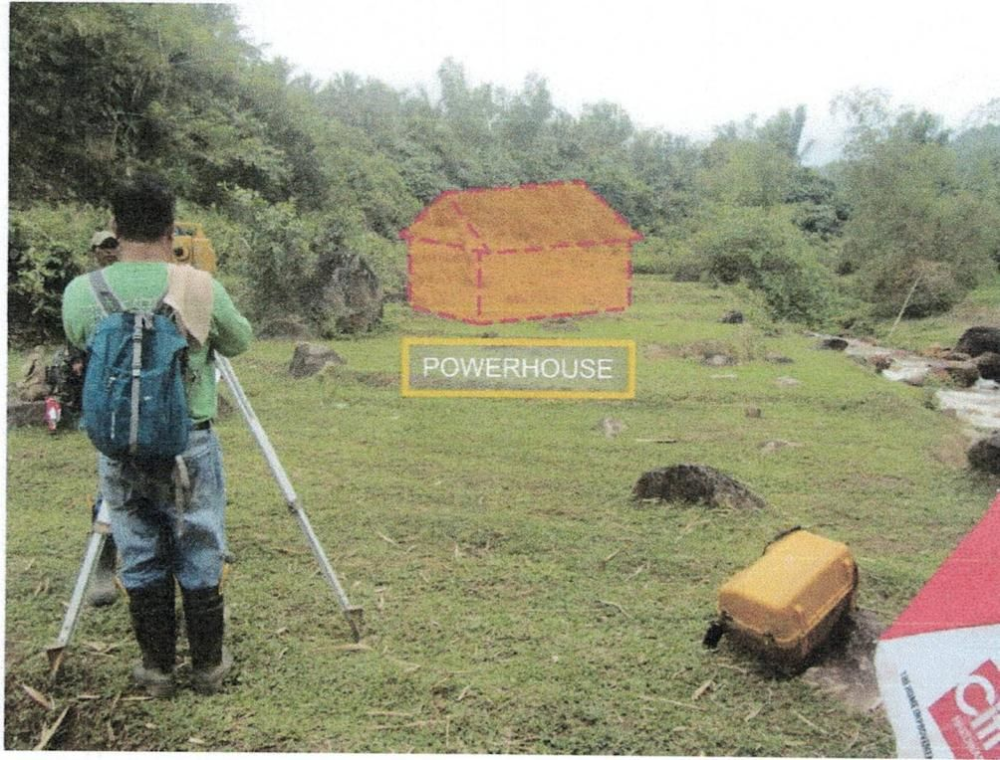
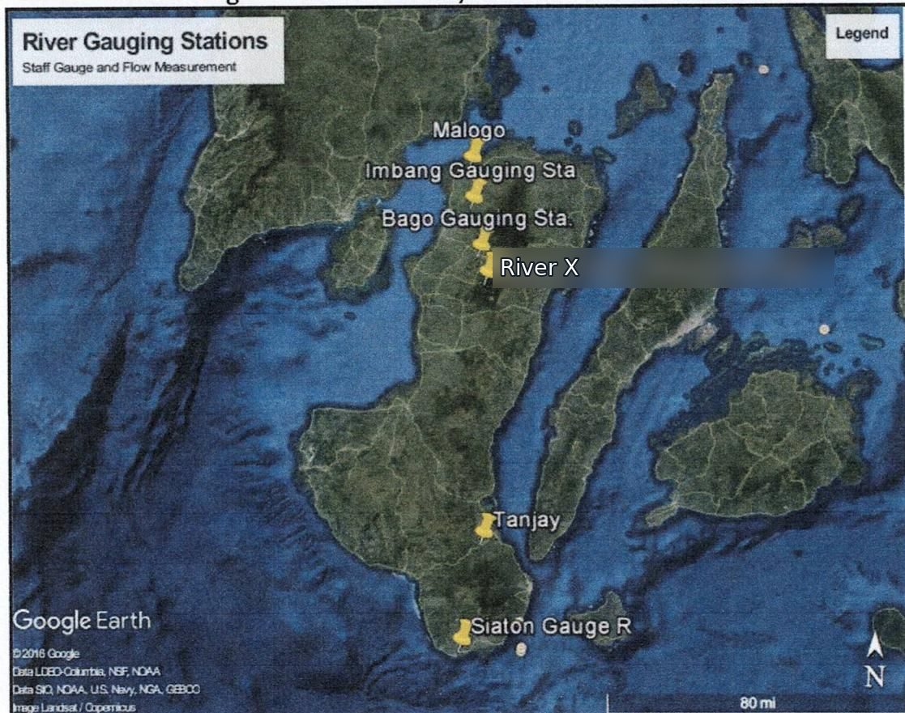

Working with data that comes as points, not formulas: fit a curve through it, find its slope, add up the area under it.
Linear regression, polynomial regression, interpolation with polynomials
2-point forward, backward and central differences
Single trapezoid → composite → cumulative trapezoid
→ / Space: next step · ←: back · N: speaker notes · P: presenter window · F: fullscreen · T: light/dark
Lab data has scatter. We want one equation that describes it, so we can predict values we never measured.
Both use the same family of curves, polynomials $y=a_nx^n+\dots+a_1x+a_0$. The difference is how many coefficients we use and what we ask them to do.
We look for the line $y=a_1x+a_0$. At each data point the residual is the vertical miss:
Summing raw residuals fails (positive and negative misses cancel). Summing $|e_i|$ does not give a unique line. Least squares minimises the sum of the squared residuals:
$S_r$ is a function of the two unknowns $a_0$ and $a_1$ only. The $x_i$ and $y_i$ are numbers from the data.
So "best line" becomes a calculus problem: find the minimum of $S_r(a_0,a_1)$.
Divide by $-2$, split the sums, and use $\sum a_0 = n\,a_0$:
$$n\,a_0 + \left(\textstyle\sum x_i\right)a_1 = \textstyle\sum y_i$$ $$\left(\textstyle\sum x_i\right)a_0 + \left(\textstyle\sum x_i^2\right)a_1 = \textstyle\sum x_iy_i$$Only four sums are needed: $\sum x_i,\ \sum y_i,\ \sum x_iy_i,\ \sum x_i^2$. Compute them in a table first.
| $i$ | $x_i$ force (N) | $y_i$ ext. (mm) | $x_iy_i$ | $x_i^2$ |
|---|---|---|---|---|
| 1 | 10 | 2.1 | 21 | 100 |
| 2 | 20 | 3.9 | 78 | 400 |
| 3 | 30 | 6.2 | 186 | 900 |
| 4 | 40 | 7.8 | 312 | 1600 |
| 5 | 50 | 10.1 | 505 | 2500 |
| 6 | 60 | 12.2 | 732 | 3600 |
| 7 | 70 | 13.8 | 966 | 4900 |
| Σ | 280 | 56.1 | 2800 | 14000 |
At 45 N the model predicts $y=9.007$ mm. The slope is the spring's compliance, about 0.199 mm per N.
Compare the spread around the mean with the spread around the line:
If $S_{y/x}\lt S_y$ the regression has merit. The coefficient of determination:
$$r^2=\frac{S_t-S_r}{S_t}\qquad r=\sqrt{r^2}$$| $S_t$ | 110.589 |
| $S_r$ | 0.1829 |
| $S_y$ (std. deviation) | 4.293 |
| $S_{y/x}$ (std. error of estimate) | 0.1912 |
| $r^2$ | 0.9983 |
$S_{y/x}\ll S_y$ and the line explains 99.83% of the variation in extension.
Drag any point. Click empty space to add one; right-click or double-click a point to remove it. One outlier can pull the line a long way because its error is squared.
polyfit and polyvalx = [10 20 30 40 50 60 70]; % force, N y = [2.1 3.9 6.2 7.8 10.1 12.2 13.8]; % mm
p = polyfit(x, y, 1)p =
0.1986 0.0714yhat = polyval(p, x); St = sum((y - mean(y)).^2); Sr = sum((y - yhat).^2); r2 = (St - Sr)/St
r2 =
0.9983polyval(p, 45)ans =
9.0071plot(x, y, 'o', x, yhat, '-')
(opens a figure: data points and the fitted line)
polyfit lists coefficients from the highest power down: p(1) is $a_1$, p(2) is $a_0$. The third argument is the degree.
Fit $y=a_2x^2+a_1x+a_0$ by the same idea: minimise
Setting $\partial S_r/\partial a_0$, $\partial S_r/\partial a_1$, $\partial S_r/\partial a_2$ to zero gives three linear equations:
$$\begin{bmatrix} n & \sum x_i & \sum x_i^2\\ \sum x_i & \sum x_i^2 & \sum x_i^3\\ \sum x_i^2 & \sum x_i^3 & \sum x_i^4\end{bmatrix}\begin{bmatrix}a_0\\a_1\\a_2\end{bmatrix}=\begin{bmatrix}\sum y_i\\ \sum x_iy_i\\ \sum x_i^2y_i\end{bmatrix}$$Row $j$, column $k$ of the matrix is $\sum x_i^{\,j+k}$; the right side is $\sum x_i^{\,j}y_i$ ($j,k=0\dots m$).
Solve with Gaussian elimination, LU, or your calculator's matrix mode (methods from the earlier chapters).
$$S_{y/x}=\sqrt{\frac{S_r}{n-(m+1)}}$$$m+1$ coefficients were estimated, so $m+1$ degrees of freedom are used up.
| $v$ (km/h) | 20 | 30 | 40 | 50 | 60 | 70 | 80 |
|---|---|---|---|---|---|---|---|
| $d$ (m) | 6.1 | 11.2 | 18.5 | 26.0 | 36.4 | 46.7 | 60.2 |
Sums: $n=7$, $\sum v=350$, $\sum v^2=20\,300$, $\sum v^3=1\,295\,000$, $\sum v^4=87\,710\,000$, $\sum d=205.1$, $\sum vd=12\,767$, $\sum v^2d=852\,270$.
| Linear | Quadratic | |
|---|---|---|
| $S_r$ | 47.74 | 0.787 |
| $S_{y/x}$ | 3.090 | 0.443 |
| $r^2$ | 0.9793 | 0.9997 |
| $d$ at 100 km/h | 74.2 m | 89.9 m |
The line's $r^2$ looks excellent, yet it under-predicts braking at 100 km/h by about 16 m. Physics says $d\propto v^2$; plot the residuals before trusting $r^2$.
Degree 2 matches the physics. Higher degrees push $r^2$ toward 1 but bend wildly beyond the data (the plot runs past 80 km/h). Watch $S_{y/x}$: it stops improving once extra terms only chase noise.
v = [20 30 40 50 60 70 80]; % km/h d = [6.1 11.2 18.5 26.0 36.4 46.7 60.2]; % m
A = [numel(v) sum(v) sum(v.^2); sum(v) sum(v.^2) sum(v.^3); sum(v.^2) sum(v.^3) sum(v.^4)]; b = [sum(d); sum(v.*d); sum(v.^2.*d)]; a = A\b
a =
0.1429
0.1495
0.0075p = polyfit(v, d, 2)p =
0.0075 0.1495 0.1429polyval(p, 100)ans = 89.8571
A\b solves the normal equations; its answer is lowest power first ($a_0,a_1,a_2$). polyfit gives the same numbers, highest power first.
With $n$ points and a polynomial of degree $m=n-1$ there are as many coefficients as points. The least-squares fit then has $S_r=0$: the curve passes through every point.
Same polynomial, written in Newton's form (easier by hand):
$$f(x)=b_1+b_2(x-x_1)+b_3(x-x_1)(x-x_2)+b_4(x-x_1)(x-x_2)(x-x_3)$$The $b$'s are divided differences. Lagrange's form gives the same polynomial again; there is only one polynomial of degree $n-1$ through $n$ points.
polyval at the new $x$. Best for noisy data.Many equally spaced points + high degree → large wiggles near the ends (Runge's phenomenon). The demo shows it.
| $T$ (°C) | 0 | 10 | 20 | 30 |
|---|---|---|---|---|
| $\rho$ (kg/m³) | 999.84 | 999.70 | 998.21 | 995.65 |
4 precise table values → cubic through all four. Newton divided differences:
$$b_1=999.84,\ b_2=-0.014,\ b_3=-0.00675,\ b_4=4.6667\times10^{-5}$$| Method | $\rho(25)$ |
|---|---|
| Exact cubic (degree $n-1=3$) | 997.046 |
| Least-squares quadratic, then evaluate | 997.095 |
| Published table value | ≈ 997.05 |
The data is precise, so passing through every point wins here. With noisy lab data, the regression route would be the safer choice.
Runge: push $n$ to 11–15 and the exact polynomial swings at the ends. Turn on noise with the smooth function: the interpolant chases every error, the low-degree fit does not.
polyfitT = [0 10 20 30]; rho = [999.84 999.70 998.21 995.65];
p3 = polyfit(T, rho, numel(T)-1); polyval(p3, 25)
ans = 997.0463
p2 = polyfit(T, rho, 2); polyval(p2, 25)
ans = 997.0952
max(abs(polyval(p3, T) - rho))
ans = (a tiny number, around 1e-13: round-off only)
Degree $n-1$ makes polyfit interpolate: the curve passes through every point. With many points MATLAB may warn the polynomial is badly conditioned, which is Runge's problem showing up in the numbers.

A small hydroelectric plant is proposed on the Maragandang River, high on the slopes of Canlaon Volcano.
Before anyone builds it, a feasibility study must answer one question: how big a power plant can this river support?
You are the hydrology engineer on that study. Over three chapters you will use today's three methods on the project's real data to answer it.
All data in this case study come from the project's feasibility study.



Power from falling water:
$$P=9.81\,Q\,H_n\,\eta\quad(\text{kW})$$$Q$ flow through the turbine (m³/s), $H_n$ net head (m), $\eta$ overall efficiency, about 0.80.
The survey fixes the head: 225.89 m drop minus 12.2 m lost to pipe friction gives $H_n=213.69$ m.
The unknown is $Q$: how much water the river carries, and how often. Rivers rise and fall with the seasons.

A gauging station measures a river in two ways:
Maragandang's own gauge only started in December 2016: far too short. The study must borrow the long record of a nearby gauged river, scaled down to Maragandang's smaller watershed (about 10 km²).
Two gauged rivers are candidates for the borrowed record:
About 12 km from the site. Large watershed, about 402 km². Wide riverbed of boulders, gravel and sand.
About 32 km from the site. Small watershed, about 32 km². Riverbed mostly solid bedrock.
The borrowed record is only as good as that river's rating curve. If height does not predict flow reliably, every one of thousands of daily flows is unreliable. Your call: whose record do we borrow?
Imbang: field gaugings, $H$ (m) and $Q$ (m³/s), $n=18$
| H | 1.30 | 1.35 | 1.45 | 1.52 | 1.55 | 1.58 | 1.61 | 1.68 | 1.71 |
|---|---|---|---|---|---|---|---|---|---|
| Q | 0.7 | 0.9 | 1.2 | 2.5 | 1.6 | 2.0 | 1.4 | 2.6 | 3.3 |
| H | 1.73 | 1.82 | 1.85 | 2.10 | 3.05 | 3.10 | 3.10 | 3.30 | 3.60 |
| Q | 2.5 | 2.3 | 2.4 | 11.8 | 44.0 | 42.5 | 50.8 | 60.5 | 93.6 |
Bago: $n=24$
| H | 0.94 | 0.96 | 0.96 | 0.98 | 0.98 | 1.02 | 1.04 | 1.04 |
|---|---|---|---|---|---|---|---|---|
| Q | 25 | 18 | 27 | 25 | 29 | 27 | 12 | 49 |
| H | 1.06 | 1.08 | 1.10 | 1.12 | 1.12 | 1.14 | 1.16 | 1.20 |
| Q | 30 | 32 | 16 | 30 | 34 | 30 | 51 | 37 |
| H | 1.22 | 1.26 | 1.30 | 1.46 | 1.50 | 1.60 | 1.70 | 1.70 |
| Q | 41 | 46 | 47 | 55 | 59 | 107 | 89 | 138 |
Field measurements from each river's gauging station, as charted in the feasibility study.
Sums for Imbang: $\sum H=37.4$, $\sum H^2=87.6732$, $\sum H^3=230.1477$, $\sum H^4=660.0608$, $\sum Q=326.6$, $\sum HQ=1023.341$, $\sum H^2Q=3293.7525$
| Imbang | Bago | |
|---|---|---|
| $S_y$ (spread about mean) | 27.66 | 29.61 |
| $S_{y/x}$ (spread about curve) | 3.16 | 12.19 |
| $r^2$ | 0.9885 | 0.8453 |
At the same Bago reading, $H=1.04$ m, the field crews measured 12 and 49 m³/s. No curve can pass near both.
Decision: borrow Imbang. Bago's gravel bed reshapes after every flood, so the same height means a different flow from month to month. The feasibility study made the same choice.
Evaluate the Imbang quadratic at low stages:
| $H$ (m) | 1.2 | 1.5 | 1.7 | 3.0 |
|---|---|---|---|---|
| $Q$ (m³/s) | 5.08 | 1.67 | 1.56 | 43.28 |
The curve says the river carries more water at 1.2 m than at 1.5 m. Its lowest point is at $H=70.084/(2\cdot21.739)=1.61$ m.
A real rating curve can only go up: more height, more flow. The quadratic earns $r^2=0.9885$ from the big flood points and bends the wrong way where the low-flow points sit.
For a mini-hydro plant, low flows are the whole business. The feasibility study's engineers instead fitted a power law, $Q=0.1506\,H^{5.0678}$, which always increases.
Lesson from Part 1 again: a high $r^2$ does not mean the curve is right everywhere. Check the shape, especially near the ends.
Red marks stages where $Q$ decreases as $H$ rises, which a river cannot do.
Velocity from position readings, strain rate from a data logger: the slope must come from the points themselves.
For equally spaced data with step $h=x_{i+1}-x_i$:
Uses the point to the right. Works at the first data point.
Uses the point to the left. Works at the last data point.
Uses both neighbours. Needs a point on each side, so interior points only.
Central is usually far more accurate for the same $h$: its errors from the left and right sides largely cancel.
With $h=0.1$: $f(1.9)=0.641854$, $f(2)=0.693147$, $f(2.1)=0.741937$
| Method | Estimate | Error | % error |
|---|---|---|---|
| Forward | 0.487902 | −0.012098 | 2.42% |
| Backward | 0.512933 | +0.012933 | 2.59% |
| Central | 0.500417 | +0.000417 | 0.083% |
Now halve $h$ again and again:
| $h$ | Forward error | Central error |
|---|---|---|
| 0.1 | 0.012098 | 0.000417 |
| 0.05 | 0.006148 | 0.000104 |
| 0.025 | 0.003099 | 0.000026 |
Halving $h$ halves the forward error but quarters the central error. Forward/backward error shrinks like $h$; central like $h^2$.
Bottom plot: error vs. $h$ on log scales, down to $h=10^{-13}$. Central falls twice as steeply. At tiny $h$ both errors climb again: subtracting two nearly equal numbers loses digits (round-off).
A car's position is logged every $h=2$ s. Estimate $v=ds/dt$ at every time, using the best formula each point allows.
| $t$ (s) | $s$ (m) | Formula | $v$ (m/s) |
|---|---|---|---|
| 0 | 0 | forward | (11−0)/2 = 5.5 |
| 2 | 11 | central | (40−0)/4 = 10.0 |
| 4 | 40 | central | (87−11)/4 = 19.0 |
| 6 | 87 | central | (150−40)/4 = 27.5 |
| 8 | 150 | central | (228−87)/4 = 35.25 |
| 10 | 228 | backward | (228−150)/2 = 39.0 |
Endpoints have only one neighbour, so they must use forward (first) or backward (last).
Interior points get central differences: note the denominator is $2h=4$ s, not $h$.
If the data is noisy, differentiating amplifies the noise. Fit a regression curve first (Part 1), then differentiate the fit.
diff does the subtractionformat short g
t = 0:2:10; h = 2;
s = [0 11 40 87 150 228];diff(s)ans =
11 29 47 63 78fwd = diff(s)/hfwd =
5.5 14.5 23.5 31.5 39cen = (s(3:end) - s(1:end-2))/(2*h)
cen =
10 19 27.5 35.25v = [fwd(1), cen, fwd(end)]
v =
5.5 10 19 27.5 35.25 39diff(s)/h is forward differences at t(1:end-1), and the same numbers are backward differences at t(2:end). So fwd(end) is the backward difference at the last point.
Imbang's borrowed record is decades of daily staff-gauge heights. Each one becomes a flow through your Chapter 1 rating curve, and the plant will be sized from those flows.
A reader wades out each morning and reads the painted staff to the nearest centimetre. Rain, current and glare make a 1 cm slip easy.
How much flow does one centimetre cost? That is the slope of the rating curve, $dQ/dH$.
| $H$ (m) | $Q(H-h)$ | $Q(H)$ | $Q(H+h)$ |
|---|---|---|---|
| 1.7 | 1.4247 | 1.5618 | 1.8075 |
| 3.0 | 40.3137 | 43.2768 | 46.3486 |
| $dQ/dH$ (m³/s per m) | at 1.7 m | at 3.0 m |
|---|---|---|
| Forward | 4.915 | 61.436 |
| Backward | 2.741 | 59.262 |
| Central | 3.828 | 60.349 |
For a quadratic the central difference is exact: $dQ/dH=2(21.739)H-70.084$ gives 3.828 and 60.349.
| 1 cm misread | $\Delta Q$ (m³/s) | vs. 0.67 design flow |
|---|---|---|
| at 1.7 m | 0.038 | 6% |
| at 3.0 m | 0.60 | 90% |
In a flood, a single centimetre is worth about 0.6 m³/s, almost the entire flow the turbine is designed for. Flood readings need care, or a recorder instead of a person.
At normal stages a 1 cm slip costs only about 0.04 m³/s, which is why the daily low-flow record can still be trusted.
The feasibility study's power law $Q=0.1506H^{5.0678}$ has slope $dQ/dH=0.763\,H^{4.0678}$:
| at 1.7 m | at 3.0 m | |
|---|---|---|
| Our quadratic | 3.83 | 60.35 |
| Power law | 6.61 | 66.60 |
The two curves give similar flows but their slopes at 1.7 m differ by 70%. Differentiating a fitted curve magnifies its shape errors.
Flow-rate readings to total volume, velocity to distance: add up the area under the points.
Join $(a,f(a))$ and $(b,f(b))$ with a line and take the area underneath:
$$I(f)\approx\frac{f(a)+f(b)}{2}\,(b-a)$$Split $[a,b]$ into $N$ subintervals of width $h=\dfrac{b-a}{N}$ and add the trapezoids:
$$I(f)\approx\frac{h}{2}\left[f(a)+2\sum_{i=2}^{N}f(x_i)+f(b)\right]$$Interior points are shared by two trapezoids, hence the factor 2.
Example: $\displaystyle\int_0^{\pi}\sin x\,dx=2$
| $N$ | 1 | 2 | 4 | 8 |
|---|---|---|---|---|
| Trapezoid | 0.0000 | 1.5708 | 1.8961 | 1.9742 |
| Error | 2.0000 | 0.4292 | 0.1039 | 0.0258 |
One trapezoid gives 0 (both ends are on the axis). Each doubling of $N$ cuts the error to about a quarter.
The composite rule gives one number, the total. Often we want the integral up to every data point: volume in a tank over time, distance travelled so far.
Add one trapezoid at a time. The last running value equals the composite total.
Inflow to a reservoir, $Q$ in m³/min, read every minute:
| $t$ (min) | $Q$ | This trapezoid | $V$ so far (m³) |
|---|---|---|---|
| 0 | 2.0 | – | 0 |
| 1 | 3.5 | (2.0+3.5)/2 = 2.75 | 2.75 |
| 2 | 5.2 | 4.35 | 7.10 |
| 3 | 6.1 | 5.65 | 12.75 |
| 4 | 5.4 | 5.75 | 18.50 |
| 5 | 3.8 | 4.60 | 23.10 |
| 6 | 2.5 | 3.15 | 26.25 |
A single trapezoid over 0–6 min would give (2.0+2.5)/2 × 6 = 13.5 m³, about half the real total.
Top: the trapezoids. Bottom: the running total $I_k$ (dots) against the exact running integral. With the inflow data, $N$ is fixed by the readings.
trapz for the total, cumtrapz for the running sumformat short g t = 0:6; % min Q = [2.0 3.5 5.2 6.1 5.4 3.8 2.5]; % m^3/min
V = trapz(t, Q)V = 26.25
Vc = cumtrapz(t, Q)Vc =
0 2.75 7.1 12.75 18.5 23.1 26.25x = linspace(0, pi, 5); trapz(x, sin(x))
ans = 1.8961
h = x(2) - x(1); f = sin(x); h/2*(f(1) + 2*sum(f(2:end-1)) + f(end))
ans = 1.8961
Always pass the $x$ (or $t$) vector: trapz(Q) alone assumes $h=1$. cumtrapz starts at 0 and its last entry equals trapz.
The borrowed record, scaled to Maragandang, is summarised as a flow duration curve:
Reading it: at 19% the curve shows 0.67 m³/s, so the river carries 0.67 m³/s or more on 19% of days, about 69 days a year. It carries at least 0.28 m³/s on 80% of days.
The left end is floods (rare); the right end is the dry season (almost always available).
Maragandang flow duration curve: $Q$ (m³/s) reached or exceeded on the given % of days.
| % days | 0 | 2 | 5 | 8 | 10 | 12 | 14 | 16 | 17 | 18 | 19 | 20 |
|---|---|---|---|---|---|---|---|---|---|---|---|---|
| Q | 1.90 | 1.45 | 1.15 | 0.95 | 0.85 | 0.78 | 0.74 | 0.71 | 0.70 | 0.68 | 0.67 | 0.65 |
| % days | 22 | 24 | 26 | 28 | 30 | 32 | 34 | 36 | 38 | 40 | 45 | 50 |
| Q | 0.63 | 0.61 | 0.60 | 0.58 | 0.57 | 0.55 | 0.53 | 0.53 | 0.50 | 0.49 | 0.46 | 0.43 |
| % days | 55 | 60 | 65 | 70 | 75 | 80 | 85 | 90 | 95 | 100 | ||
| Q | 0.40 | 0.38 | 0.36 | 0.33 | 0.30 | 0.28 | 0.24 | 0.21 | 0.17 | 0.11 |
A turbine is built for one design flow $Q_d$. On days the river carries more, the extra spills over the weir unused. The design team proposes $Q_d=0.67$ m³/s, the flow reached on 19% of days.
$A_k=\dfrac{(P_{k}-P_{k-1})}{2}\left[Q_{k-1}+Q_k\right]$, keeping a running total:
| Interval (%) | Trapezoid | Running total |
|---|---|---|
| 0 – 2 | 2 × (1.90+1.45)/2 = 3.35 | 3.35 |
| 2 – 5 | 3 × (1.45+1.15)/2 = 3.90 | 7.25 |
| 5 – 8 | 3 × (1.15+0.95)/2 = 3.15 | 10.40 |
| 8 – 10 | 2 × (0.95+0.85)/2 = 1.80 | 12.20 |
| … 33 intervals … | … | |
| to 100 | 50.17 |
Usable flow: from 0 to 19% the turbine takes only 0.67, a rectangle $0.67\times19=12.73$. From 19% to 100% the river is below $Q_d$: trapezoid area 31.30.
$$\bar Q_{\text{usable}}=\frac{12.73+31.30}{100}=0.440\ \text{m}^3/\text{s}$$Plant factor = energy actually produced in a year ÷ energy if the plant ran at full capacity all 8,760 hours.
The river supplies 65.7% of full flow. The design team then allowed for the turbine running less efficiently when below $Q_d$ (about 10% lower) and about 15 days a year of maintenance and typhoon shutdowns. Result: a plant factor of 58%.
The feasibility study reports 5,678 MWh/yr.
| $Q_d$ (m³/s) | Capacity | Plant factor | Energy (MWh) |
|---|---|---|---|
| 0.71 | 1,200 kW | 55% | 5,769 |
| 0.67 | 1,120 kW | 58% | 5,678 |
| 0.60 | 1,010 kW | 62% | 5,527 |
| 0.49 | 820 kW | 71% | 5,130 |
A bigger turbine catches more flood water but sits part-empty more of the year. The team chose 1,120 kW at 58% as the best financial balance.
Three chapters, one river: fit a trustworthy rating curve, differentiate it to know how much to trust each reading, integrate the resulting flow record to size the plant.
Plant factor here is 0.88 × the usable share, the ratio implied by the design team's options table. Capacity uses $H_n=213.69$ m and $\eta=0.80$.
Fit $y=a_1x+a_0$ and find $r^2$.
| $x$ | 1 | 2 | 3 | 4 | 5 |
|---|---|---|---|---|---|
| $y$ | 2.2 | 4.1 | 6.3 | 7.9 | 10.2 |
$\sum x=15,\ \sum y=30.7,\ \sum xy=111.9,\ \sum x^2=55$
$a_1=\dfrac{5(111.9)-15(30.7)}{5(55)-15^2}=\dfrac{99}{50}=1.98$, $a_0=6.14-1.98(3)=0.20$
$y=1.98x+0.20$, $r^2=0.9978$
Fit $y=a_2x^2+a_1x+a_0$.
| $x$ | 0 | 1 | 2 | 3 | 4 |
|---|---|---|---|---|---|
| $y$ | 1.0 | 1.8 | 3.9 | 7.2 | 11.8 |
Sums: $n=5,\ \sum x=10,\ \sum x^2=30,\ \sum x^3=100,\ \sum x^4=354$, $\sum y=25.7,\ \sum xy=78.4,\ \sum x^2y=271.0$
$a_0=0.9971,\ a_1=0.1857,\ a_2=0.6286$
$y=0.6286x^2+0.1857x+0.9971$, $r^2=0.99999$
Find the polynomial through $(1,2)$, $(2,3)$, $(4,11)$ and estimate $f(3)$.
3 points → degree 2. Newton: $b_1=2$, $b_2=\frac{3-2}{2-1}=1$, $b_3=\frac{\frac{11-3}{4-2}-1}{4-1}=1$
$f(x)=2+(x-1)+(x-1)(x-2)=x^2-2x+3$
$f(3)=6$
Estimate $f'(1)$ for $f(x)=e^x$ with $h=0.1$ using forward, backward and central differences. Which is closest to the exact $e=2.71828$?
$f(0.9)=2.459603$, $f(1)=2.718282$, $f(1.1)=3.004166$
Forward: $2.85884$ (error $+0.1406$)
Backward: $2.58679$ (error $-0.1315$)
Central: $2.72281$ (error $+0.0045$), closest
A cyclist's speed is recorded. Find the distance travelled at every reading.
| $t$ (s) | 0 | 5 | 10 | 15 | 20 |
|---|---|---|---|---|---|
| $v$ (m/s) | 0 | 12 | 20 | 24 | 25 |
$h=5$. Trapezoids: 30, 80, 110, 122.5
Running distance: 0, 30, 110, 220, 342.5 m
MATLAB: cumtrapz(0:5:20, [0 12 20 24 25])
Line: $a_1=\frac{n\sum xy-\sum x\sum y}{n\sum x^2-(\sum x)^2}$, $a_0=\bar y-a_1\bar x$
Polynomial: normal equations, entries $\sum x^{j+k}$
$r^2=\frac{S_t-S_r}{S_t}$, $S_{y/x}=\sqrt{\frac{S_r}{n-(m+1)}}$
Interpolation: degree $n-1$ through $n$ points; beware many equally spaced points
polyfit, polyval
Forward $\frac{f_{i+1}-f_i}{h}$, backward $\frac{f_i-f_{i-1}}{h}$: error $\propto h$
Central $\frac{f_{i+1}-f_{i-1}}{2h}$: error $\propto h^2$
Endpoints: forward at the start, backward at the end
Too small an $h$ → round-off error grows
diff(f)/h
Single: $\frac{f(a)+f(b)}{2}(b-a)$
Composite: $\frac{h}{2}\left[f(a)+2\sum f(x_i)+f(b)\right]$, $h=\frac{b-a}{N}$
Cumulative: $I_k=I_{k-1}+\frac{h}{2}(f_{k-1}+f_k)$
Doubling $N$ → error about ¼
trapz, cumtrapz